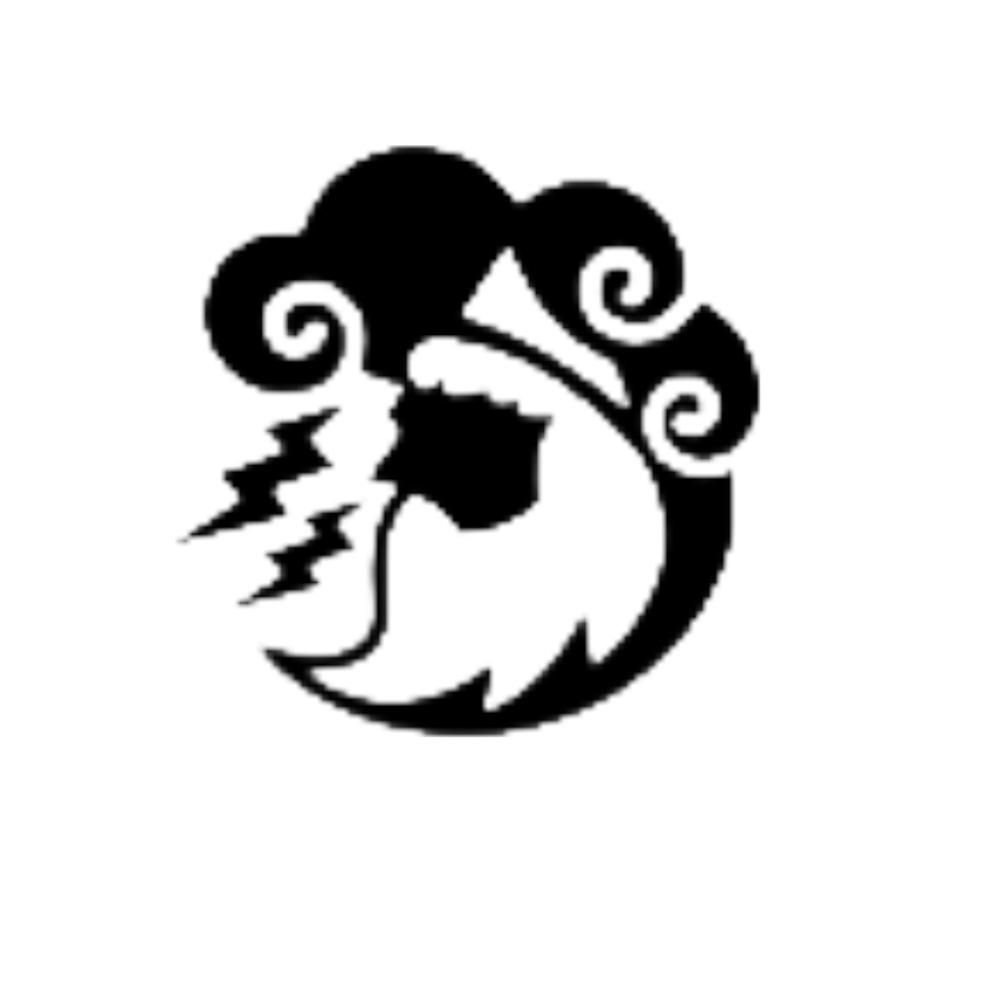
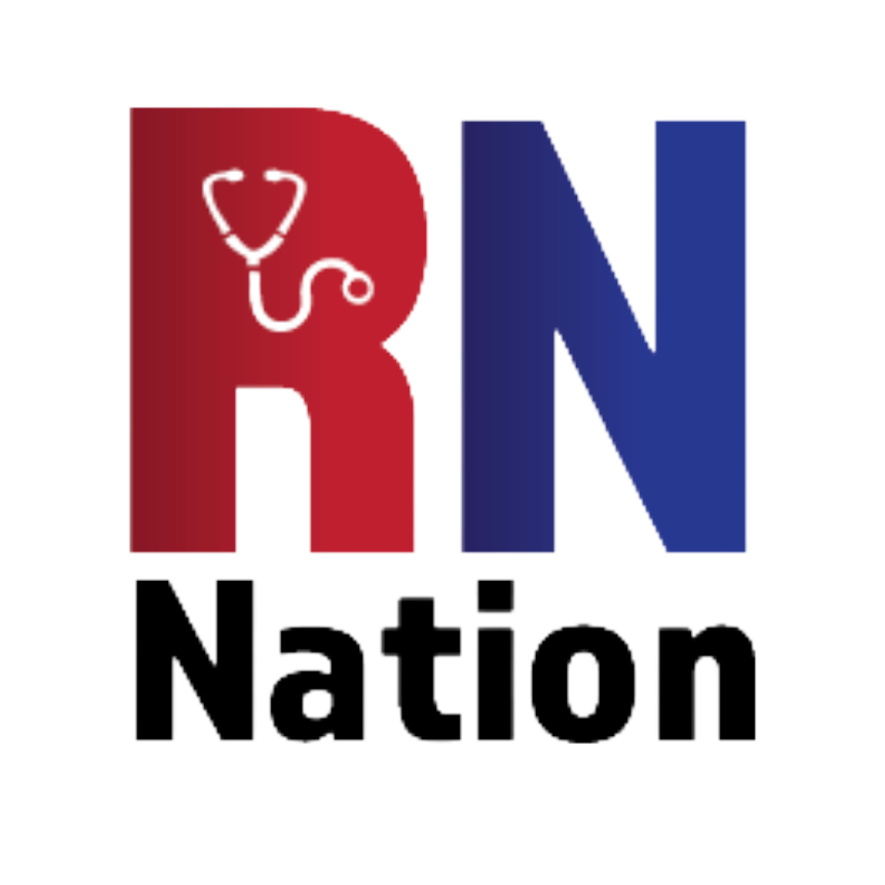
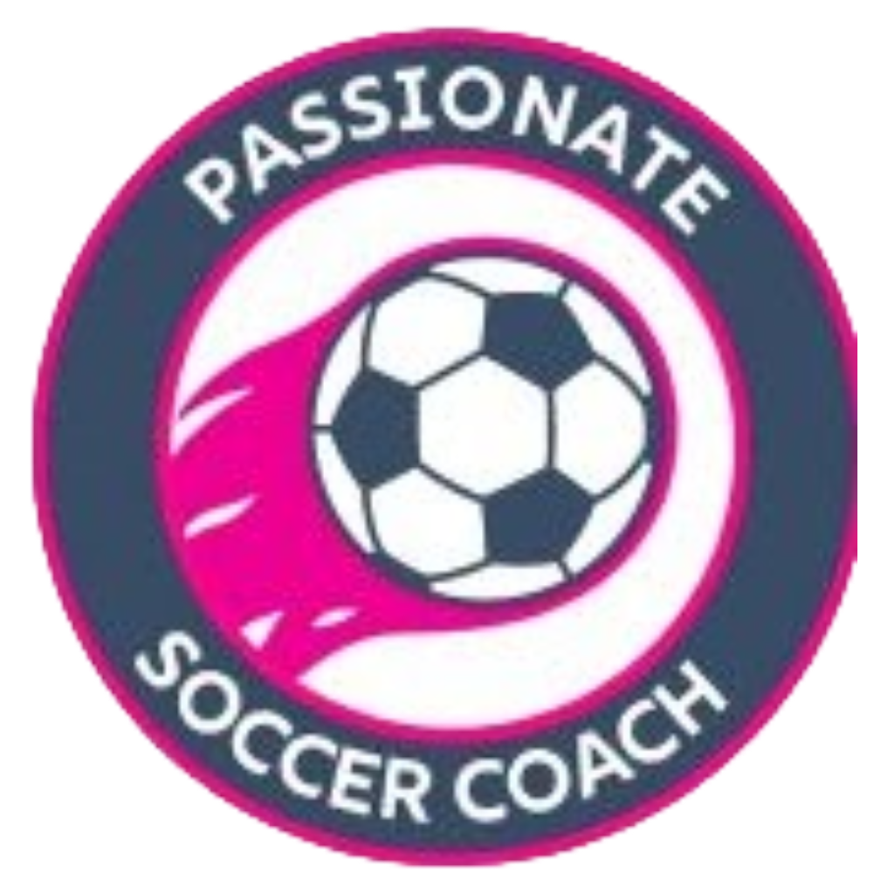
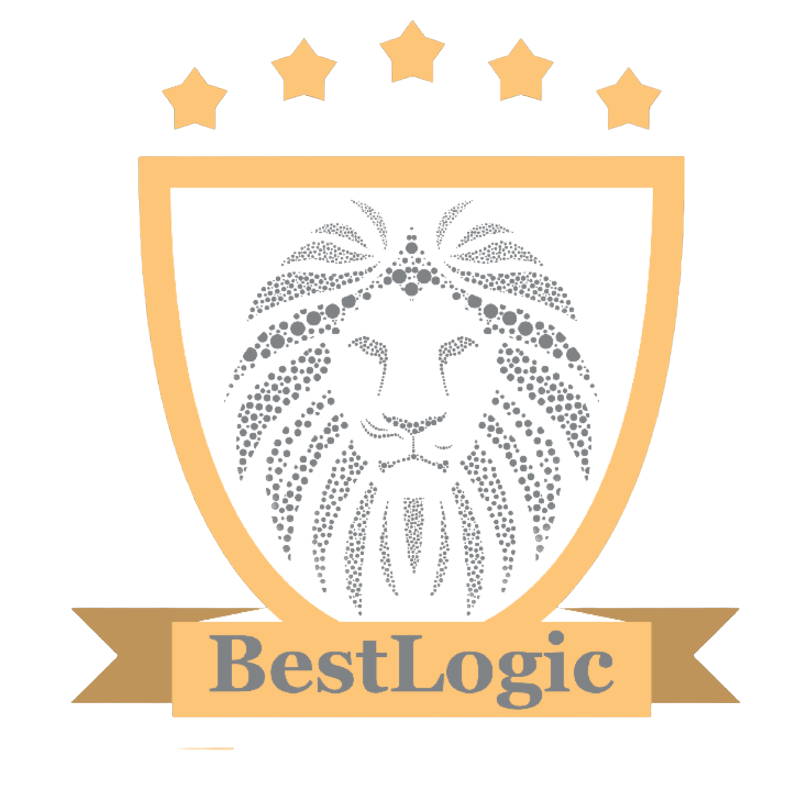

01 / 04

ZeusCareers
Finance & Accounting Job Board — Website Redesign
Read case study// selected work
Four companies, four distinct challenges. Each project below follows the arc from problem to impact — because great design is only great if it does something.
Project Gallery
01 / 04

Finance & Accounting Job Board — Website Redesign
Read case study02 / 04

Nursing Careers Platform — Brand & Campaign Design
Read case study03 / 04

Coaching Resource Hub — Visual Identity & Content Design
Read case study04 / 04

Staffing Agency — Full Brand Refresh & Collateral
Read case studyIntro
As a Graphic Design Intern at BestLogic Staffing, I was given a 13-hour open brief to create a suite of design work for ZeusCareers — a finance and accounting job board running on a generic third-party template. The brief asked for bold, creative output across any format I chose. Rather than defaulting to a single style, I used the assignment to explore what the brand could become across social media, print, logo design, and web.
The Challenge
The live site was built on a Jobboardly template — functional, but visually generic. It shared no design language with the brand name "Zeus," which carries strong associations with power, authority, and mythology. The social presence had no consistent visual system. The challenge I set for myself was to figure out what "Zeus" actually looks like as a brand — and explore multiple answers to that question rather than committing prematurely to one.
Who We're Designing For
28 years old · 4 years post-CPA · Currently employed, casually looking · Chicago, IL
Goals
Frustrations
How the redesign responds to Marcus
The Work
I produced work across three distinct visual directions — testing which felt most true to the brand. The mythology-illustrated direction used a Zeus character, gold and navy, and bold conceptual copy ("Even Gods Believe in Work-Life Balance"). The dark editorial direction used photo composites and heavy type for an aspirational, premium feel ("Break the Mold," "Be the Storm"). The black-and-white minimalist direction stripped everything back to stark contrast — a lightning bolt, blocky type, no color — targeting a more corporate, authoritative register. Alongside the social posts, I created two logo explorations, a website banner, an event flyer, a resume services infographic, and a Figma website redesign that I hosted live on Render.


What I Learned
Working across three distinct tonal directions taught me that visual identity is a strategic choice, not just an aesthetic one. The mythology-illustrated style feels approachable and community-oriented — better for social engagement. The black-and-white minimalist direction signals institutional authority — better for candidates who already take the brand seriously. Choosing between them isn't about which looks better; it's about who you're trying to reach and what you want them to feel. This project pushed me to think about design decisions in terms of audience and intent, not just craft.
The Outcome
By the end of the assignment I had produced 20 design pieces across five format types — enough to populate a real social calendar, test different brand voices, and give the company a starting point for a consistent visual identity. The Figma website redesign, hosted live at zeus-redesign.onrender.com, went beyond the brief's requirements by translating the design into a working, deployed product — demonstrating not just visual thinking but the ability to ship.
Intro
As part of my graphic design internship at BestLogic Staffing, I was assigned weekly design briefs for RNNation — a healthcare job board for registered nurses. Over 7 weeks, I produced logos, a website banner, social media posts, posters, flyers, and educational graphics. The brief gave creative latitude, but the real constraint was trickier: nurses are a tight-knit professional community with a strong sense of identity. Generic "find your next job" messaging doesn't land with them.
The Challenge
Most healthcare job board content defaults to stock photography and generic CTAs — "Browse Positions Now," "Apply Today." That approach treats nurses as a market segment rather than a community. The design challenge wasn't just making things look professional; it was figuring out what nurses actually care about beyond job listings — their identity, burnout, advocacy issues, humor, and professional pride — and building content that reflected all of it.
Who We're Designing For
31 years old · BSN · Currently employed, evaluating options · Houston, TX
What she needs
What she's over
The Work
Rather than producing variations of the same CTA post, I developed content across six intentional pillars. Identity posts affirmed what nurses are beyond their job title ("Advocate. Lifesaver. Educator. Leader."). Humor posts used nursing-specific props — IV bags labeled "Hope" and "Caffeine," a coffee-match game by specialty — to earn trust through relatability. Advocacy posts ("Safe Staffing. Better Pay. Mental Health Support.") positioned RNNation as a brand that stands for nurses, not just with them. Educational content — a BLS-sourced salary infographic, resume tips, an interview prep checklist — provided genuine utility. Community posts targeted new grads and nursing students. And CTA posts drove job browsing without feeling like ads. Alongside the social content, I designed two logo explorations, a website banner, and a homepage mockup.


What I Learned
The "You Can't Pour From an Empty Syringe" post — a syringe icon rendered as a nearly-dead battery at 5% — worked because it said something true before it said anything promotional. It acknowledged burnout without pivoting immediately to a job listing. That kind of content builds the credibility that makes a CTA post actually land later. The lesson: for a community audience, earned trust is the prerequisite for conversion. Designing for nurses taught me that the order of operations matters — identity content, then humor, then advocacy, then ask.
The Outcome
By the end of the 7 weeks, the RNNation work had produced a 26-piece content library spanning six distinct pillars — enough to run a full month of varied social content without repeating a format. The logo explorations and website mockup gave the brand a stronger visual foundation. More importantly, the content strategy documented here gives any future designer or marketer a framework: know the community before you sell to them.
Intro
As part of my graphic design internship at BestLogic Staffing, I was given weekly design briefs for PassionateSoccerCoach — a coaching resource platform built around a single coach's philosophy. This was the most distinct brief of the internship: unlike ZeusCareers or RNNation, PSC isn't a company. It's a person's expertise turned into a brand. Every design choice had to reflect a coaching philosophy — player-centered development, joy, respect, lifelong love of the game — not just promote a service.
The Challenge
PassionateSoccerCoach serves coaches who want to develop their craft, parents who are deciding whether to trust this platform with their kids' development, and players who need inspiration and identity. A job board can talk to one type of person with one message. A coaching platform has to work for all three simultaneously — and the tone that resonates with a serious coach ("The Will to Win Means Nothing Without the Will to Train") is completely different from what earns a smile from a soccer parent on the sideline.
Who We're Designing For
The Coach
Wants credibility + craft
Responds to philosophy-forward content. Needs to see that PSC takes coaching seriously, not just cheerfully.
The Parent
Wants trust + relatability
Responds to warmth, humor, and proof that the platform understands what Saturday mornings actually look like.
The Player
Wants inspiration + identity
Responds to bold, emotionally resonant quotes and visuals that make them feel like athletes, not just kids.
The Work
I built the visual identity around a consistent navy blue and magenta palette — energetic enough for sport, polished enough to signal professional expertise. Two logo explorations gave the brand options: a structured "Empower" badge with a player silhouette, and a dynamic round badge with a soccer ball and swoosh. The Core Values infographic translated the coaching philosophy into a shareable visual asset. Motivational posts ("A Good Coach Can Change a Game. A Great Coach Can Change a Life.") anchored the brand's emotional register. The Soccer Parent Bingo — a humor post designed specifically for sideline parents — was the most engagement-oriented piece in the set, targeting an audience that rarely gets content made for them. International coaching, seasonal posts, and subscription CTAs rounded out the content mix.


What I Learned
Designing for PSC pushed me to think about voice as a design material. For ZeusCareers or RNNation, the brand voice is institutional — the company speaks. For PSC, the brand voice is one person's genuine philosophy. That means every post has to feel like it could have come from a real coach's perspective, not a marketing team. The Soccer Parent Bingo worked because it was specific — not "parents love soccer" but "this exact absurd thing happens on this exact Saturday morning." Specificity is what makes community content shareable. Generic content gets scrolled past; content that makes someone say "that's literally me" gets tagged and saved.
The Outcome
The 12-piece output gave PassionateSoccerCoach a coherent visual system — two logo options, a values infographic that could live permanently on a website or in a press kit, and a social content library spanning philosophy, humor, motivation, and conversion. Most importantly, the work demonstrated that a one-person coaching brand can look just as polished and intentional as a funded startup — when the design takes the person's expertise seriously.